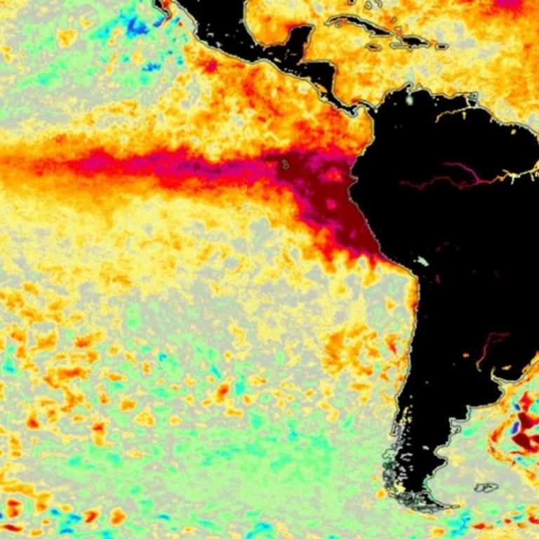
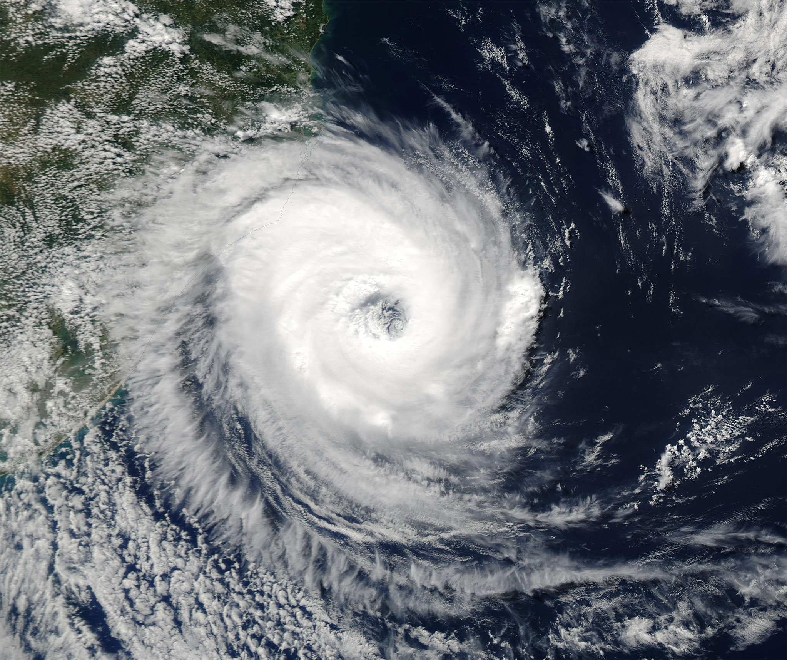
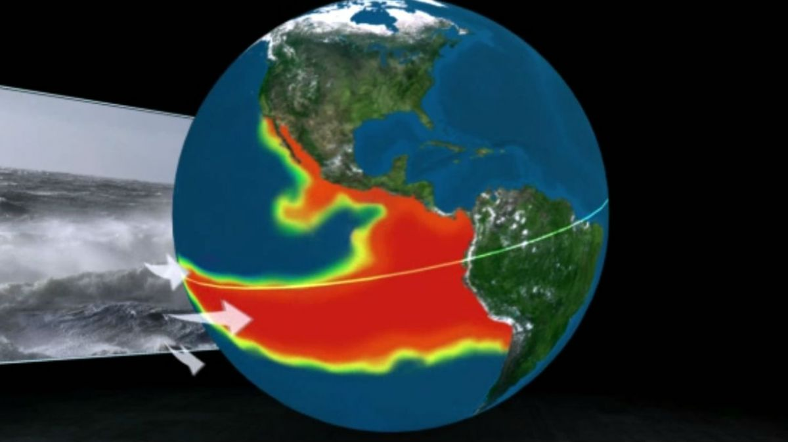

MeterologicoWEB
Contáctenos
Volver anterior página
Unetenos!
  
Paises mas afectados por el Fenómeno del Niño
Tristemente los paises americanos son los mas afectados, porque les da directamente el fenomeno
Top 5 paises afectados, fenomeno del Niño
Perú
Ecuador
Colombia
Brasil
Australia